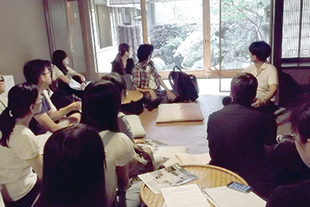

從多元化的課程安排來看
為年長者專門開設的課程，以及注重語言學習與實際體驗兼顧的課程，為日語學習增添了不太一樣的選擇。
KAI日本語學校
50+コース 為50歲以上的學習者專設的課程
由於赴日旅遊觀光的難度並不高，有不少人會數度造訪日本，在深度旅遊已經蔚為風氣的現在，不只年輕人，也開始有年長者希望更深入地體驗、了解日本文化。
「50+コース」的教學，就是讓即使是不怎麼會日語的人，也能夠學會並習慣簡單的日語會話，並在學習過程中體驗各式各樣的日本文化。學習者在上午練習初級的日語會話，下午學校則安排有各種文化體驗活動；由於附有數次的午餐或晚餐，學習者也能享用到優質的日本料理。上午課堂上學到的語言表現或情境對話，馬上就可以在用餐時間實地運用，就算日語還不是很流利，也能在最短的時間內就體驗到運用日語交談的樂趣及成就感；加上一個班的同學都是同為50歲以上的學習者，可以用相同且較為慢一點的學習步調習慣日語，在體驗學校安排的學習相關活動時，也比較能夠用類似的觀點來享受活動內容。

京都日本語教育中心京都日本語學校
インテンシブコース 集中學習焦點
顧名思義，「インテンシブコース」便是密集教學型的課程。在課程規劃上，為1週內安排了20堂課的全日制教學，主要是提供給想要加大學習強度與深度的日語學習者。按照學習者的日語能力，課程整體粗分為初級、中級、上級等3個等級。インテンシブコース為小班制教學（原則上一個班13人，中級為18人），注重聽、說、讀、寫4個方向的均衡發展，並兼顧每個學習者的學習目的與個性，以便有效率的進行日語授課。
初級的教學重心是放在扎根上，以打好基礎為主；中級與上級在日語教學之外，則另外加入了明確的學習焦點──中級聚焦於「文化」，在教學中融入諸多日本傳統文化的要素；上級則著重「商務」，除了安排學生到日本的企業的第一線參訪、邀請來賓演講外，在課程中則著重商務日語相關技能的培養。透過已經確立的學習目標，以雙管齊下的方式，來強化學習者的日語能力。
